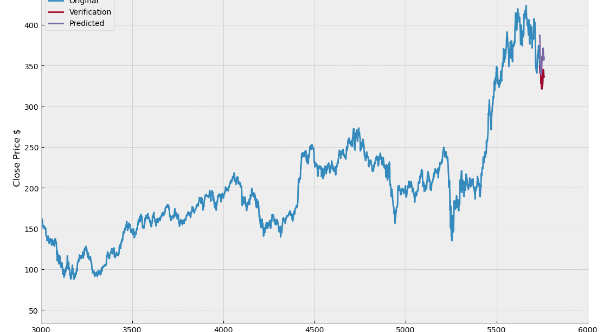
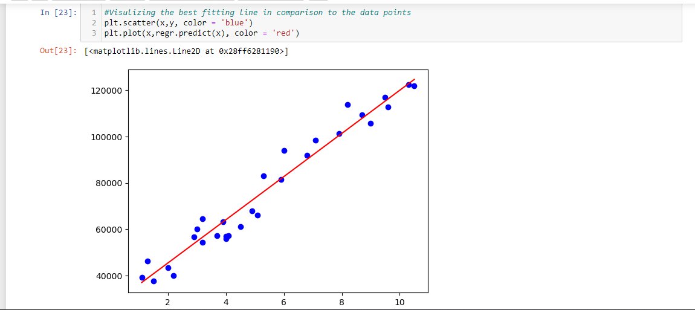
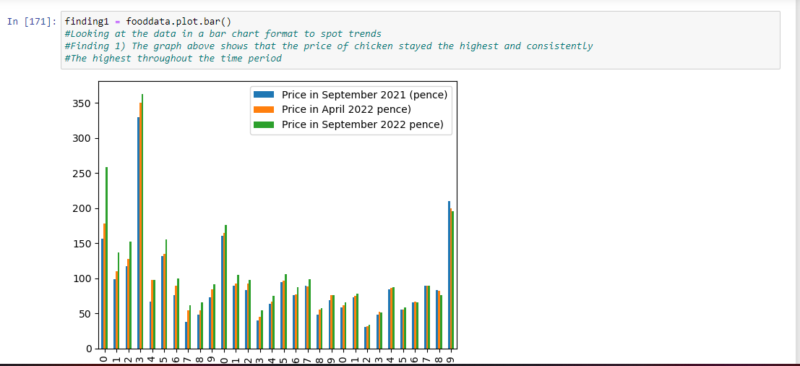

Project 1 Outcome
I began by gathering and organising previous data on Goldman Sachs stock prices. I utilised two machine learning models, linear regression and decision trees, to make predictions after dividing the data into training and testing sets. I chose the decision tree model since it had a higher accuracy rating after analysing the models performance. In order to better analyse trends and spot any potential patterns, I represented the data and model output using a graph . I used the model to forecast Goldman Sachs' stock price in the future.
Project 2 Outcome
In order to forecast incomes based on age, I gathered data on people's ages and salaries, divided it into training and testing groups, and then used a linear regression model. I evaluated the model's performance, finding it to be very accurate, and used scatterplots and regression lines to show the data. I used the model to explore numerous scenarios and to forecast predicted wages for people of various ages. Overall, the linear regression model offered insightful information on how age and earnings relate to one another.
Project 3 Outcome

I As a university student working on a data analysis project, I collected and compared data , looking for patterns and trends that could provide insights. Using visualization techniques such as charts, graphs, and maps, I was able to make the data more accessible and identify interesting relationships between variables. The visualizations allowed me to see patterns and trends that were not immediately apparent in the raw data, and I was able to draw conclusions and make recommendations based on these insights. The project was a valuable learning experience in data analysis and visualization, and I was proud of the insights I was able to uncover.